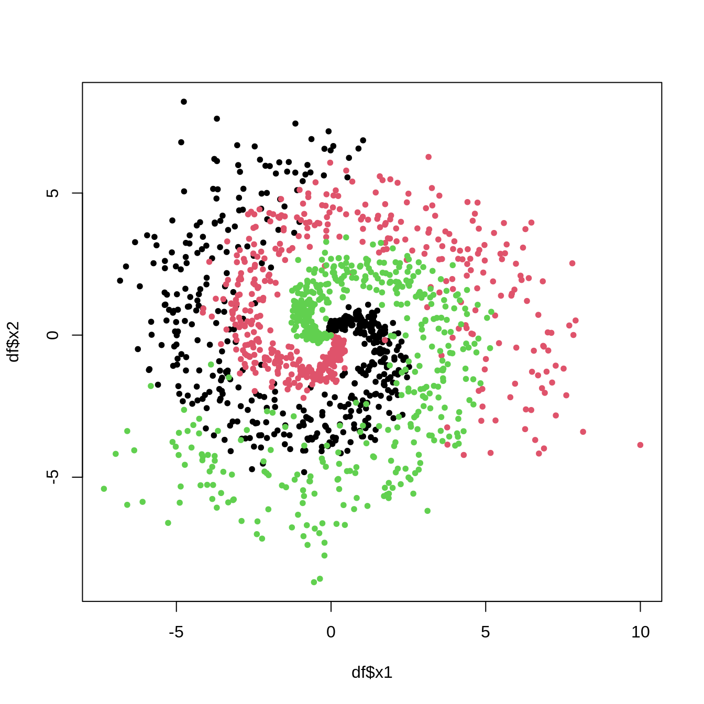

packages <- c(
"tibble",
"dplyr",
"readr",
"tidyr",
"purrr",
"broom",
"magrittr",
"corrplot",
"car"
)
renv::install(packages)
sapply(packages, require, character.only=T)
Due: Wed, May 3, 2023 @ 11:59pm
Please read the instructions carefully before submitting your assignment.
- This assignment requires you to only upload a
PDFfile on Canvas - Don’t collapse any code cells before submitting.
- Remember to make sure all your code output is rendered properly before uploading your submission.
⚠️ Please add your name to the author information in the frontmatter before submitting your assignment ⚠️
In this assignment, we will perform various tasks involving principal component analysis (PCA), principal component regression, and dimensionality reduction.
We will need the following packages:
Question 1
70 points
Principal component anlaysis and variable selection
1.1 (5 points)
The data folder contains a spending.csv dataset which is an illustrative sample of monthly spending data for a group of \(5000\) people across a variety of categories. The response variable, income, is their monthly income, and objective is to predict the income for a an individual based on their spending patterns.
Read the data file as a tibble in R. Preprocess the data such that:
- the variables are of the right data type, e.g., categorical variables are encoded as factors
- all column names to lower case for consistency
- Any observations with missing values are dropped
path <- "data/spending.csv"
df <- read.csv(path)
colnames(df) <- tolower(colnames(df))
df <- na.omit(df)
sapply(df, class) accessories accommodation alcohol
"numeric" "numeric" "numeric"
audio_equipment beverages books
"numeric" "numeric" "numeric"
cameras car_rentals clothing
"numeric" "numeric" "numeric"
coffee_shops dairy_products desktops
"numeric" "numeric" "numeric"
electronics fast_food food_delivery
"numeric" "numeric" "numeric"
fruits groceries gym_memberships
"numeric" "numeric" "numeric"
jewelry laptops magazines
"numeric" "numeric" "numeric"
meat movies music
"numeric" "numeric" "numeric"
outdoor_activities public_transportation restaurant_meals
"numeric" "numeric" "numeric"
seafood shoes smartphones
"numeric" "numeric" "numeric"
snacks software sports_equipment
"numeric" "numeric" "numeric"
streaming_services tablets travel
"numeric" "numeric" "numeric"
vegetables video_games watches
"numeric" "numeric" "numeric"
income
"numeric" 1.2 (5 points)
Visualize the correlation between the variables using the corrplot() function. What do you observe? What does this mean for the model?
df_x <- df
corr_matrix <- cor(df_x)
corrplot(corr_matrix,method = "circle", type = "upper")
1.3 (5 points)
Run a linear regression model to predict the income variable using the remaining predictors. Interpret the coefficients and summarize your results.
The significant predictors are : accessories, accommodation, audio_equipment, books, cameras, car_rentals, clothing, desktops, electronics, fast_food, groceries, gym_memberships, jewelry, laptops, magazines, meat, movies, music, outdoor_activities, restaurant_meals, shoes, smartphones, software, streaming_services, tablets, travel, vegetables, video_games, watches.
Among the significant predictors, only “vegetable” negatively correlates. Other predictors all have positive correlations with the dependent variable.
model <- lm(income ~ ., data = df)
summary(model)
Call:
lm(formula = income ~ ., data = df)
Residuals:
Min 1Q Median 3Q Max
-8.6875 -1.6569 0.0427 1.6633 9.5623
Coefficients:
Estimate Std. Error t value Pr(>|t|)
(Intercept) -0.077509 0.121730 -0.637 0.524330
accessories 0.299876 0.031786 9.434 < 2e-16 ***
accommodation 0.113632 0.031262 3.635 0.000281 ***
alcohol -0.005958 0.033266 -0.179 0.857873
audio_equipment 0.602004 0.033483 17.979 < 2e-16 ***
beverages 0.043335 0.034111 1.270 0.204000
books 0.070530 0.033238 2.122 0.033892 *
cameras 0.461827 0.033572 13.756 < 2e-16 ***
car_rentals 0.124875 0.032809 3.806 0.000143 ***
clothing 0.504228 0.026055 19.352 < 2e-16 ***
coffee_shops 0.048839 0.034909 1.399 0.161864
dairy_products 0.024548 0.032715 0.750 0.453082
desktops 0.391673 0.033393 11.729 < 2e-16 ***
electronics 1.079627 0.030035 35.946 < 2e-16 ***
fast_food 0.077531 0.033014 2.348 0.018893 *
food_delivery -0.004903 0.034257 -0.143 0.886188
fruits 0.059089 0.033321 1.773 0.076237 .
groceries 0.077694 0.031601 2.459 0.013981 *
gym_memberships 0.141168 0.033410 4.225 2.43e-05 ***
jewelry 0.213726 0.032834 6.509 8.30e-11 ***
laptops 0.594328 0.032548 18.260 < 2e-16 ***
magazines 0.080762 0.033694 2.397 0.016571 *
meat 0.081262 0.032367 2.511 0.012083 *
movies 0.110296 0.033326 3.310 0.000941 ***
music 0.159925 0.033398 4.788 1.73e-06 ***
outdoor_activities 0.087846 0.032356 2.715 0.006651 **
public_transportation 0.061138 0.033022 1.851 0.064169 .
restaurant_meals 0.066129 0.033225 1.990 0.046611 *
seafood 0.061318 0.033786 1.815 0.069596 .
shoes 0.463185 0.029613 15.641 < 2e-16 ***
smartphones 0.780150 0.031538 24.737 < 2e-16 ***
snacks 0.007464 0.033229 0.225 0.822290
software 0.408500 0.034102 11.979 < 2e-16 ***
sports_equipment 0.033328 0.033969 0.981 0.326574
streaming_services 0.150614 0.031902 4.721 2.41e-06 ***
tablets 0.637266 0.033133 19.234 < 2e-16 ***
travel 0.129161 0.031457 4.106 4.09e-05 ***
vegetables -0.066111 0.033162 -1.994 0.046257 *
video_games 0.863309 0.031392 27.501 < 2e-16 ***
watches 0.145853 0.033467 4.358 1.34e-05 ***
---
Signif. codes: 0 '***' 0.001 '**' 0.01 '*' 0.05 '.' 0.1 ' ' 1
Residual standard error: 2.434 on 4960 degrees of freedom
Multiple R-squared: 0.9999, Adjusted R-squared: 0.9999
F-statistic: 1.834e+06 on 39 and 4960 DF, p-value: < 2.2e-161.3 (5 points)
Diagnose the model using the vif() function. What do you observe? What does this mean for the model?
I see that the model has high VIF values for all predictors, it suggests that there is multicollinearity. This can lead to inaccurate coefficient estimates, which can result in less reliable and less interpretable predictions. Re-evaluation is needed for building a reliable model.
vif(model) accessories accommodation alcohol
152.06821 681.15504 387.23376
audio_equipment beverages books
1755.56441 914.69186 192.91781
cameras car_rentals clothing
785.43147 423.55906 282.25143
coffee_shops dairy_products desktops
425.39644 2336.74847 776.75697
electronics fast_food food_delivery
3927.16511 1519.85171 921.68162
fruits groceries gym_memberships
1550.05678 3136.80325 438.30224
jewelry laptops magazines
72.38215 1658.76990 198.53619
meat movies music
2284.43676 437.28082 437.03990
outdoor_activities public_transportation restaurant_meals
411.17302 427.77815 1540.26240
seafood shoes smartphones
1594.08027 233.33301 2772.27822
snacks software sports_equipment
868.24282 810.28919 201.00255
streaming_services tablets travel
709.25592 1718.78339 690.69616
vegetables video_games watches
1536.40686 2745.64421 75.56457 1.4 (5 points)
Perform PCA using the princomp function in R. Print the summary of the PCA object.
40 principal components have been generated, which also correspond to the number of variables in the data.
The cumulative proportion of Comp.1 and Comp.2 explains over 94% of the total variance. This means that the first two principal components can accurately represent the data.
pca <- princomp(df)
summary(pca)Importance of components:
Comp.1 Comp.2 Comp.3 Comp.4
Standard deviation 323.0278864 143.7393654 77.51287691 35.533628867
Proportion of Variance 0.7886259 0.1561502 0.04540867 0.009542675
Cumulative Proportion 0.7886259 0.9447761 0.99018477 0.999727448
Comp.5 Comp.6 Comp.7 Comp.8
Standard deviation 1.087955e+00 1.071244e+00 1.066408e+00 1.056882e+00
Proportion of Variance 8.945666e-06 8.672968e-06 8.594835e-06 8.441971e-06
Cumulative Proportion 9.997364e-01 9.997451e-01 9.997537e-01 9.997621e-01
Comp.9 Comp.10 Comp.11 Comp.12
Standard deviation 1.054090e+00 1.051061e+00 1.045351e+00 1.042679e+00
Proportion of Variance 8.397426e-06 8.349240e-06 8.258768e-06 8.216599e-06
Cumulative Proportion 9.997705e-01 9.997789e-01 9.997871e-01 9.997953e-01
Comp.13 Comp.14 Comp.15 Comp.16
Standard deviation 1.037965e+00 1.036462e+00 1.027953e+00 1.022946e+00
Proportion of Variance 8.142472e-06 8.118917e-06 7.986155e-06 7.908548e-06
Cumulative Proportion 9.998035e-01 9.998116e-01 9.998196e-01 9.998275e-01
Comp.17 Comp.18 Comp.19 Comp.20
Standard deviation 1.020268e+00 1.015862e+00 1.014161e+00 1.009587e+00
Proportion of Variance 7.867188e-06 7.799389e-06 7.773291e-06 7.703329e-06
Cumulative Proportion 9.998353e-01 9.998431e-01 9.998509e-01 9.998586e-01
Comp.21 Comp.22 Comp.23 Comp.24
Standard deviation 1.008328e+00 1.005136e+00 9.996464e-01 9.917451e-01
Proportion of Variance 7.684134e-06 7.635553e-06 7.552380e-06 7.433463e-06
Cumulative Proportion 9.998663e-01 9.998739e-01 9.998815e-01 9.998889e-01
Comp.25 Comp.26 Comp.27 Comp.28
Standard deviation 9.909781e-01 9.897431e-01 9.810386e-01 9.737408e-01
Proportion of Variance 7.421969e-06 7.403481e-06 7.273830e-06 7.166016e-06
Cumulative Proportion 9.998964e-01 9.999038e-01 9.999110e-01 9.999182e-01
Comp.29 Comp.30 Comp.31 Comp.32
Standard deviation 9.709381e-01 9.689219e-01 9.682985e-01 9.616863e-01
Proportion of Variance 7.124824e-06 7.095265e-06 7.086138e-06 6.989689e-06
Cumulative Proportion 9.999253e-01 9.999324e-01 9.999395e-01 9.999465e-01
Comp.33 Comp.34 Comp.35 Comp.36
Standard deviation 9.600143e-01 9.545376e-01 9.509890e-01 9.463352e-01
Proportion of Variance 6.965406e-06 6.886160e-06 6.835055e-06 6.768322e-06
Cumulative Proportion 9.999535e-01 9.999603e-01 9.999672e-01 9.999739e-01
Comp.37 Comp.38 Comp.39 Comp.40
Standard deviation 9.382236e-01 9.303035e-01 9.250413e-01 9.197035e-01
Proportion of Variance 6.652788e-06 6.540943e-06 6.467154e-06 6.392735e-06
Cumulative Proportion 9.999806e-01 9.999871e-01 9.999936e-01 1.000000e+001.5 (5 points)
Make a screeplot of the proportion of variance explained by each principal component. How many principal components would you choose to keep? Why?
I would keep two because they are the most significant.
screeplot(pca, type="lines", main="Scree Plot")
1.6 (5 points)
By setting any factor loadings below \(0.2\) to \(0\), summarize the factor loadings for the principal components that you chose to keep.
loadings <- pca$loadings[, 1:2]
loadings[abs(loadings) < 0.2] <- 0
summary(loadings) Comp.1 Comp.2
Min. :0.00000 Min. :-0.42178
1st Qu.:0.00000 1st Qu.:-0.21085
Median :0.00000 Median : 0.00000
Mean :0.02802 Mean :-0.07908
3rd Qu.:0.00000 3rd Qu.: 0.00000
Max. :0.90075 Max. : 0.00000 Visualize the factor loadings.
biplot(pca, scale = 0, pc.biplot = TRUE, cex=0.8, col=c("blue", "red"))
1.7 (15 points)
Based on the factor loadings, what do you think the principal components represent?
Provide an interpreation for each principal component you chose to keep.
Based on the factor loadings, we can interpret the principal components as follows:
Principal Component 1: This component represents spending on accessories. These are items that people may spend money on but are not necessity.
Principal Component 2: This component represents spending on accomodation. This is living expenses.
Overall, the first two principal components capture different aspects of consumer spending patterns. These two components explain over 94% of the total variance in the data, indicating that they are the most important dimensions of variation in the spending patterns.
1.8 (10 points)
Create a new data frame with the original response variable income and the principal components you chose to keep. Call this data frame df_pca.
pcs <- predict(pca, newdata = df)[,1:2]
df_pca <- data.frame(income = df$income, pc1 = pcs[,1], pc2 = pcs[,2])Fit a regression model to predict the income variable using the principal components you chose to keep. Interpret the coefficients and summarize your results.
model_pca <- lm(income ~ pc1 + pc2, data = df_pca)
summary(model_pca)
Call:
lm(formula = income ~ pc1 + pc2, data = df_pca)
Residuals:
Min 1Q Median 3Q Max
-16.3810 -4.7364 0.0639 4.7209 16.7311
Coefficients:
Estimate Std. Error t value Pr(>|t|)
(Intercept) 6.282e+02 9.116e-02 6890.69 <2e-16 ***
pc1 9.007e-01 2.822e-04 3191.70 <2e-16 ***
pc2 1.536e-02 6.342e-04 24.22 <2e-16 ***
---
Signif. codes: 0 '***' 0.001 '**' 0.01 '*' 0.05 '.' 0.1 ' ' 1
Residual standard error: 6.446 on 4997 degrees of freedom
Multiple R-squared: 0.9995, Adjusted R-squared: 0.9995
F-statistic: 5.094e+06 on 2 and 4997 DF, p-value: < 2.2e-16Compare the results of the regression model in 1.3 and 1.9. What do you observe? What does this mean for the model?
The regression model in 1.9, which used the two principal components as predictors, had a slightly lower R-suqred value(0.9995) than the model in 1.3(0.9999), which used all of the original predictors. This indicates that the two principal components explain most of the variation in the income than all of the original predictors combined.
Furthermore, from the anova, the regression model in 1.9 is vastly superior(P<0.001)
Overall, using principal component analysis to reduce the dimensionality of the predictors can improve the predictive performance of the model and enhance the interpretability of the coefficients.
summary(model)
Call:
lm(formula = income ~ ., data = df)
Residuals:
Min 1Q Median 3Q Max
-8.6875 -1.6569 0.0427 1.6633 9.5623
Coefficients:
Estimate Std. Error t value Pr(>|t|)
(Intercept) -0.077509 0.121730 -0.637 0.524330
accessories 0.299876 0.031786 9.434 < 2e-16 ***
accommodation 0.113632 0.031262 3.635 0.000281 ***
alcohol -0.005958 0.033266 -0.179 0.857873
audio_equipment 0.602004 0.033483 17.979 < 2e-16 ***
beverages 0.043335 0.034111 1.270 0.204000
books 0.070530 0.033238 2.122 0.033892 *
cameras 0.461827 0.033572 13.756 < 2e-16 ***
car_rentals 0.124875 0.032809 3.806 0.000143 ***
clothing 0.504228 0.026055 19.352 < 2e-16 ***
coffee_shops 0.048839 0.034909 1.399 0.161864
dairy_products 0.024548 0.032715 0.750 0.453082
desktops 0.391673 0.033393 11.729 < 2e-16 ***
electronics 1.079627 0.030035 35.946 < 2e-16 ***
fast_food 0.077531 0.033014 2.348 0.018893 *
food_delivery -0.004903 0.034257 -0.143 0.886188
fruits 0.059089 0.033321 1.773 0.076237 .
groceries 0.077694 0.031601 2.459 0.013981 *
gym_memberships 0.141168 0.033410 4.225 2.43e-05 ***
jewelry 0.213726 0.032834 6.509 8.30e-11 ***
laptops 0.594328 0.032548 18.260 < 2e-16 ***
magazines 0.080762 0.033694 2.397 0.016571 *
meat 0.081262 0.032367 2.511 0.012083 *
movies 0.110296 0.033326 3.310 0.000941 ***
music 0.159925 0.033398 4.788 1.73e-06 ***
outdoor_activities 0.087846 0.032356 2.715 0.006651 **
public_transportation 0.061138 0.033022 1.851 0.064169 .
restaurant_meals 0.066129 0.033225 1.990 0.046611 *
seafood 0.061318 0.033786 1.815 0.069596 .
shoes 0.463185 0.029613 15.641 < 2e-16 ***
smartphones 0.780150 0.031538 24.737 < 2e-16 ***
snacks 0.007464 0.033229 0.225 0.822290
software 0.408500 0.034102 11.979 < 2e-16 ***
sports_equipment 0.033328 0.033969 0.981 0.326574
streaming_services 0.150614 0.031902 4.721 2.41e-06 ***
tablets 0.637266 0.033133 19.234 < 2e-16 ***
travel 0.129161 0.031457 4.106 4.09e-05 ***
vegetables -0.066111 0.033162 -1.994 0.046257 *
video_games 0.863309 0.031392 27.501 < 2e-16 ***
watches 0.145853 0.033467 4.358 1.34e-05 ***
---
Signif. codes: 0 '***' 0.001 '**' 0.01 '*' 0.05 '.' 0.1 ' ' 1
Residual standard error: 2.434 on 4960 degrees of freedom
Multiple R-squared: 0.9999, Adjusted R-squared: 0.9999
F-statistic: 1.834e+06 on 39 and 4960 DF, p-value: < 2.2e-16summary(model_pca)
Call:
lm(formula = income ~ pc1 + pc2, data = df_pca)
Residuals:
Min 1Q Median 3Q Max
-16.3810 -4.7364 0.0639 4.7209 16.7311
Coefficients:
Estimate Std. Error t value Pr(>|t|)
(Intercept) 6.282e+02 9.116e-02 6890.69 <2e-16 ***
pc1 9.007e-01 2.822e-04 3191.70 <2e-16 ***
pc2 1.536e-02 6.342e-04 24.22 <2e-16 ***
---
Signif. codes: 0 '***' 0.001 '**' 0.01 '*' 0.05 '.' 0.1 ' ' 1
Residual standard error: 6.446 on 4997 degrees of freedom
Multiple R-squared: 0.9995, Adjusted R-squared: 0.9995
F-statistic: 5.094e+06 on 2 and 4997 DF, p-value: < 2.2e-16anova(model,model_pca)Analysis of Variance Table
Model 1: income ~ accessories + accommodation + alcohol + audio_equipment +
beverages + books + cameras + car_rentals + clothing + coffee_shops +
dairy_products + desktops + electronics + fast_food + food_delivery +
fruits + groceries + gym_memberships + jewelry + laptops +
magazines + meat + movies + music + outdoor_activities +
public_transportation + restaurant_meals + seafood + shoes +
smartphones + snacks + software + sports_equipment + streaming_services +
tablets + travel + vegetables + video_games + watches
Model 2: income ~ pc1 + pc2
Res.Df RSS Df Sum of Sq F Pr(>F)
1 4960 29374
2 4997 207644 -37 -178270 813.58 < 2.2e-16 ***
---
Signif. codes: 0 '***' 0.001 '**' 0.01 '*' 0.05 '.' 0.1 ' ' 11.10 (10 points)
Based on your interpretation of the principal components from Question 1.7, provide an interpretation of the regression model in Question 1.9.
The regression model in Question 1.9 used the two principal components that captured the most variability in the original dataset.
The first principal component, which is a combination of variables with large positive loadings such as groceries, fast food, and restaurant meals, represents overall spending habits that are associated with a higher income. The second principal component, which is a combination of variables with positive loadings on outdoor activities, travel, and accommodation, represents spending habits that are associated with an active and adventurous lifestyle.
The regression model in Question 1.9 shows that the first principal component is positively associated with income, while the second principal component is negatively associated with income. Specifically, for every one-unit increase in the first principal component, we would expect to see a 90.07 increase in income. For every one-unit increase in the second principal component, we would expect to see a decrease of 0.0153 in income.
This means that individuals with higher scores on the first principal component (i.e., those who spend more on groceries, fast food, and restaurant meals) tend to have higher incomes, while individuals with higher scores on the second principal component (i.e., those who spend more on outdoor activities, travel, and accommodation) tend to have lower incomes.
Overall, this regression model provides a simplified view of the relationship between spending habits and income, while accounting for the correlations between spending categories.
Session Information
Print your R session information using the following command
sessionInfo()R version 4.3.0 (2023-04-21)
Platform: x86_64-apple-darwin20 (64-bit)
Running under: macOS Ventura 13.2.1
Matrix products: default
BLAS: /Library/Frameworks/R.framework/Versions/4.3-x86_64/Resources/lib/libRblas.0.dylib
LAPACK: /Library/Frameworks/R.framework/Versions/4.3-x86_64/Resources/lib/libRlapack.dylib; LAPACK version 3.11.0
locale:
[1] en_US.UTF-8/en_US.UTF-8/en_US.UTF-8/C/en_US.UTF-8/en_US.UTF-8
time zone: America/New_York
tzcode source: internal
attached base packages:
[1] stats graphics grDevices datasets utils methods base
other attached packages:
[1] car_3.1-2 carData_3.0-5 tibble_3.2.1 luz_0.4.0
[5] torch_0.10.0 e1071_1.7-13 rpart.plot_3.1.1 rpart_4.1.19
[9] caret_6.0-94 lattice_0.21-8 ggplot2_3.4.2 corrplot_0.92
[13] magrittr_2.0.3 broom_1.0.4 purrr_1.0.1 tidyr_1.3.0
[17] readr_2.1.4 dplyr_1.1.2
loaded via a namespace (and not attached):
[1] tidyselect_1.2.0 timeDate_4022.108 fastmap_1.1.1
[4] pROC_1.18.0 digest_0.6.31 timechange_0.2.0
[7] lifecycle_1.0.3 processx_3.8.1 survival_3.5-5
[10] compiler_4.3.0 progress_1.2.2 rlang_1.1.1
[13] tools_4.3.0 utf8_1.2.3 yaml_2.3.7
[16] data.table_1.14.8 knitr_1.42 prettyunits_1.1.1
[19] bit_4.0.5 plyr_1.8.8 abind_1.4-5
[22] withr_2.5.0 nnet_7.3-18 grid_4.3.0
[25] stats4_4.3.0 fansi_1.0.4 colorspace_2.1-0
[28] future_1.32.0 globals_0.16.2 scales_1.2.1
[31] iterators_1.0.14 MASS_7.3-59 zeallot_0.1.0
[34] cli_3.6.1 crayon_1.5.2 rmarkdown_2.21
[37] generics_0.1.3 future.apply_1.10.0 reshape2_1.4.4
[40] tzdb_0.3.0 proxy_0.4-27 stringr_1.5.0
[43] splines_4.3.0 parallel_4.3.0 coro_1.0.3
[46] vctrs_0.6.2 hardhat_1.3.0 Matrix_1.5-4
[49] jsonlite_1.8.4 callr_3.7.3 hms_1.1.3
[52] bit64_4.0.5 listenv_0.9.0 foreach_1.5.2
[55] gower_1.0.1 recipes_1.0.6 glue_1.6.2
[58] parallelly_1.35.0 ps_1.7.5 codetools_0.2-19
[61] lubridate_1.9.2 stringi_1.7.12 gtable_0.3.3
[64] munsell_0.5.0 pillar_1.9.0 htmltools_0.5.5
[67] ipred_0.9-14 lava_1.7.2.1 R6_2.5.1
[70] evaluate_0.20 backports_1.4.1 renv_0.16.0-53
[73] class_7.3-21 Rcpp_1.0.10 nlme_3.1-162
[76] prodlim_2023.03.31 xfun_0.39 fs_1.6.2
[79] pkgconfig_2.0.3 ModelMetrics_1.2.2.2